Lernziele
- Bereits geleistetes feiern
- Überblick über den Aufbau dieser Tutorials bekommen
- Verstehen, dass R mächtig und cool ist
- Das Zusammenspiel von R + RStudio verstehen
- Projekt
statistik-bachelorerstellen - Skript
01_einfuehrungerstellen und kompilieren
Herzlich Willkommen
Moin!
Wunderbar, dass Du hierher gefunden hast! Das bedeutet, dass Du die Anfangsschwierigkeiten bereits hervorragend gemeistert hast:
- R installieren
- R Studio installieren
- R Studio öffnen
- wichtige Pakete installieren
- dieses Tutorial finden UND öffnen
Über den Kurs
Wir freuen uns total, euch R und Statistik in diesem Format beibringen zu können, da wir es für einen übersichtlichen und eleganten Weg halten. Ihr könnt in eurem Tempo lernen und die Tutorials auch auf eurem weiteren Weg immer als Nachschlagewerk verwenden.
Diese Tutorials sind frei verfügbar, da der Quellcode auf der Plattform GitHub veröffentlicht ist.
Feedback
Sollte etwas nicht funktionieren, fehlt etwas, sollten Tippfehler auftauchen oder andere Probleme, möchten wir als Autor*innen darum bitten, uns das mitzuteilen. Auch Verbesserungsvorschläge nehmen wir gerne entgegen.
Der beste Weg dafür ist, über diesen Link Issues direkt auf GitHub zu erstellen, wo der Quellcode liegt, was allerdings einen Account benötigt bei GitHub. Ist das zu umständlich, einfach eine Email senden.
Autor*innen
Die Entwicklung wurde 2022 - 2023 im Rahmen eines Förderprojekts für digitale Lehre von HessenHub und der Universität Kassel finanziert.
An der Entwicklung haben Lukas Bruelheide und Gesa Graf mitgewirkt. Marie Klosterkamp hat das Projekt geleitet und die Tutorials inhaltlich geprüft.
Aufbau
Die Tutorials sind alle gleich aufgebaut:
- Lernziele: Damit ihr wisst, worauf ihr beim Bearbeiten dieses Tutorials besonders achten könnt
- Inhalte: Die eigentlichen Inhalte
- Abschlussquiz: Was von dem, was wir wichtig finden ist hängen geblieben?
- Learnings: Knappe Zusammenfassung des Kapitels
interaktive Codeblöcke
Der Grund, warum wir diese Tutorials interaktiv nennen: Sie enthalten ausführbare Code-Blöcke, deren Inhalt Sie bearbeiten können.
Schreib Deinen Code hinein und führe ihn aus mit
Strg + Enter oder dem Knopf
▶ Code ausführen.
Es gibt zu jeder Aufgabe auch Tipps oder Lösungen. Klicke dafür auf den
Button 💡Tipp oder Lösung.
Aufgabe:
Ändere die Rechnung in 2 + 3
1 + 12 + 3Die meisten Aufgaben in diesem Kurs sind direkt im jeweiligen Tutorial in den entsprechenden Code-Chunks zu lösen. Du findest sie in den fliederfarbenen Kästen (s.o.).
Es wird auch einige wenige Aufgaben geben, für die Du bitte in R wechselst. Diese Aufgaben findest Du in den hellgrünen Kästen.
Beispiel:
So sieht der Aufgabenblock für RStudio aus
Nun kommen wir zur Magie:
Demo 1: Visualisierung von Mobilitätsdaten
Bevor wir weiter etwas über R erzählen, möchten wir euch einfach zeigen was alles möglich ist. Eine klassische Aufgabe ist das Sortieren, Zusammenfassen und Visualisieren von großen Datenmengen.
Das hier ist nur eine Demo der Fähigkeiten, deswegen erklären wir an dieser Stelle nichts. Wie genau alles funktioniert und zusammenhängt, werden Sie im Laufe des Semesters lernen. Keine Sorge, wir bringen Ihnen R von Grund auf bei.
Angenommen, wir haben eine große Menge an frei verfügbaren Mobilitätsdaten und möchten explorativ schauen, welche Muster sich darin finden lassen. Zum Beispiel könnten wir uns fragen, ob die Auswirkungen der Corona-Pandemie in den Daten zu sehen sind.
Wir nutzen Daten vom statistischen Bundesamt, welche die Nutzung
verschiedener Arten des Personennahverkehrs in Deutschland von 2004 bis
2022 beschreibt. Der Datensatz heißt publictr (public
transport) und ist schon in dieses Tutorial geladen.
Überblick über die Daten
Lassen wir uns zunächst den Datensatz anzeigen, um einen Überblick zu bekommen. Folgen Sie der Analyse, in dem Sie die interaktiven Codeblöcke ausführen!
publictr |> print(n = 25)
# Wörtlich:
# Nimm Datensatz, dann drucke die ersten 25 ZeilenWir sehen sehr viele Datenpunkte in einem langen Format. Die Daten sind für Menschen schlecht lesbar, für den Computer allerdings ideal arrangiert.
Jede Zeile steht für genau eine Beobachtung, und jede Spalte repräsentiert eine Variable (auch Merkmal genannt), welche verschiedene Ausprägungen haben kann.
Es gibt folgende Variablen:
- Jahr
- Quartal
- Typ
- Personen: Anzahl der Fahrgäste
- Personenkilometer: gefahrene Kilometer * Fahrgäste
- Anzahl der ausgewerteten Unternehmen
Schauen wir uns die Variable Typ etwas genauer an. Welche Ausprägungen beinhaltet sie?
publictr$Typ |> table()
# Nimm die Variable Typ aus dem Datensatz, dann tabelliere die Häufigkeit der einzelnen AusprägungenAha, es gibt also 6 verschiedene Ausprägungen:
- Fernverkehr
- Bus
- Bahn
- Nahverkehr:
- Bus
- Straßenbahn
- Eisenbahn
- insgesamt
Filtern
Da wir uns nur für den Nahverkehr insgesamt interessieren, können wir den Datendschungel etwas lichten.
Wir möchten alle Daten behalten, wo die Variable Typ die Ausprägung Liniennahverkehr insgesamt aufweist.
publictr |>
filter(Typ == "Liniennahverkehr insgesamt")Nun sind wir dem Ziel näher. Jetzt schränken wir die Auswahl noch weiter ein auf die corona-relevanten Jahre 2018 - 2022.
corona <- publictr |>
filter(Typ == "Liniennahverkehr insgesamt") |>
filter(Jahr %in% 2018:2022)
coronaSehr gut!
Visualisieren
Nun können wir eine Grafik erstellen, um die Zahlen zu
veranschaulichen. Dazu nutzen wir ggplot2.
corona |>
mutate(Quartal = substr(Quartal,
start = 6,
stop = 6)) |>
ggplot(aes(x = Jahr,
y = Personen,
group = as_factor(Quartal))) +
geom_bar(stat = "identity",
alpha = 0.5,
position = position_dodge2(preserve = "total",
padding = 0.1),
fill = "steelblue") +
labs(title = "Personennahverkehr in Deutschland",
x = "Quartale",
y = "Fahrgäste") +
scale_y_continuous(
label = scales::unit_format(unit = "Mrd.",
scale = 1e-09)) +
theme_classic() +
theme(axis.text.x = element_text(angle = 45,
hjust = 1))Wie hier zu erkennen ist, spiegelt sich der erste Lockdown Anfang 2020 auch in der Beförderungsleistung des ÖPNV wieder.
Demo 2: Mandelbrot-Menge
Etwas advanced und weitab von den Themen, die wir in diesem Kurs behandeln werden, ist dieses Beispiel:
R Code, welcher eine animierte Grafik (GIF) erstellt, worin eine schrittweise Iteration der Mandelbrot-Menge gezeigt wird. Die Mandelbrot-Menge ist ein Fraktal, das heißt grob gesagt (unmathematisch gesprochen) eine geometrische Form, die beim Hineinzoomen immer wieder sich selbst enthält. Bei der Mandelbrot-Menge sind die Kopien ihrer selbst aber oft leicht unterschiedlich und sehr formenreich, weswegen sie eins der bekanntesten Fraktale ist.
Da es etwas rechenintensiv ist, haben wir die Animation schon vorab hergestellt und zeigen den zugehörigen Quellcode, er kann aber nicht im Tutorial ausgeführt werden.
Quelle für den Code: R Programming Language Wikipedia
# install.packages("caTools") # install external package
library(caTools) # external package providing write.gif function
dx <- 1500 # define width
dy <- 1400 # define height
C <- complex(real = rep(seq(-2.2, 1.0, length.out = dx), each = dy),
imag = rep(seq(-1.2, 1.2, length.out = dy), dx))
C <- matrix(C, dy, dx) # reshape as square matrix of complex numbers
Z <- 0 # initialize Z to zero
X <- array(0, c(dy, dx, 20)) # initialize output 3D array
for (k in 1:20) { # loop with 20 iterations
Z <- Z^2 + C # the central difference equation
X[, , k] <- exp(-abs(Z)) # capture results
}
write.gif(X, "Mandelbrot.gif", col = viridis::viridis, delay = 10)
Jetzt hast Du schon einen kleinen Einblick in die Vielseitigkeit und unzähligen Möglichkeiten der Verwendung von R erhalten, aber starten wir mit den Grundlagen. Was ist R überhaupt?
R
R ist im Grunde ein sehr potenter Taschenrechner, der große Mengen an Daten verarbeiten und simulieren kann, schöne Grafiken und sogar diese Tutorials erstellen kann. Über das, was Dein Schultaschenrechner kann (selbst wenn es einer von denen mit grafischer Funktion ist), kann R also nur müde lächeln. Und hier, im echten Leben, haben wir es eben mit großen Datenmengen zu tun.
Woher kommt der Name R?
Die Vornamen der beiden Gründer Ross Ihaka und Robert Gentleman dienten als Inspiration. Da R sehr deutlich von der Programmiersprache S beeinflusst wurde, passt der „Ein-Buchstaben-Name” in die Tradition.
Das Problem: R ist von Nerds für Nerds geschrieben, läuft ganz unauffällig ohne eine grafische Benutzeroberfläche in der Konsole und sieht in seiner Roh-Fassung ungefähr so aus:
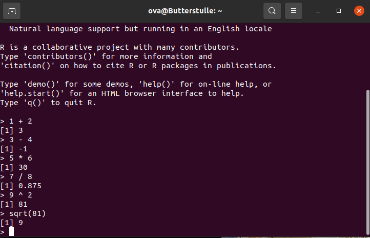
Und das wird, spätestens wenn der Bildschirm voll ist, unübersichtlich.
Und hier kommt R Studio ins Spiel. R Studio ist für die Menschen, die gerne die Power von R nutzen möchten und für ihre Programme gerne eine grafische Oberfläche nutzen. Wir werden nur in R Studio arbeiten.
RStudio’s Benutzeroberfläche
Wenn Du RStudio öffnest sieht das ungefähr so aus:
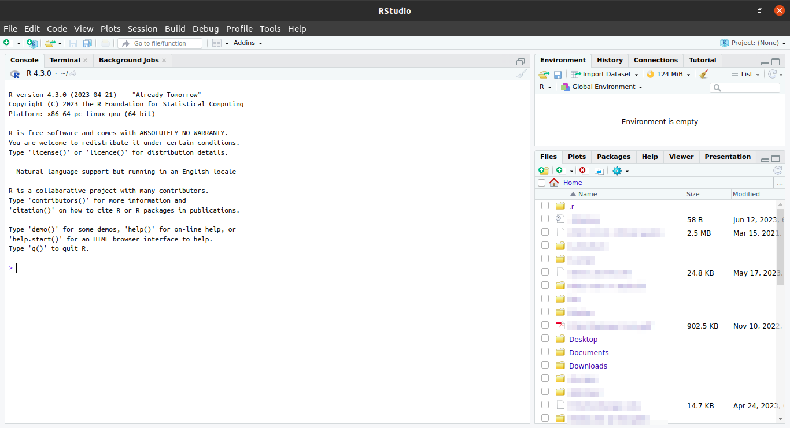
Das sieht erstmal viel und unübersichtlich aus. Aber wir brauchen (erstmal) nur einen ganz kleinen Teil davon. Und den erkläre ich dir jetzt Schritt für Schritt.
Einmalig am Anfang: Projekte
In RStudio gibt es die Möglichkeit, „Projekte” zu erstellen. Das ist dann (wie) ein Ordner, in dem Du alles, was Du für dieses Projekt benötigst (Daten, Skripte, Plots, Tabellen, Bilder etc. [unten mehr dazu]) speichern und sammeln kannst.
Im Unialltag empfinde ich es als sehr hilfreich, für jedes
entsprechende Modul ein eigenes Projekt anzulegen (also:
statistik-bachelor im Bachelor,
statistik-master im Master, etc.). Solltest Du in die
Forschung gehen wollen oder bereits Forschungsprojekte im Studium
umsetzen empfiehlt es sich, auch hierfür jeweils eigene Projekte
anzulegen. Wichtig ist dann, dass du schaust, immer im richtigen Projekt
zu arbeiten.
Ein neues Projekt erstellen
Ein Projekt erstellst du ganz oben rechts beim Symbol 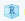. Dort steht auch immer das aktuell ausgewählte Projekt.
Aufgabe:
Erstelle in R Studio ein Projekt mit dem Namen
statistik-bachelor!
▼ Detaillierte Anleitung mit Screenshots…
- Project: (None) > New Project…
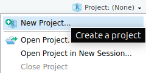
- New Directory
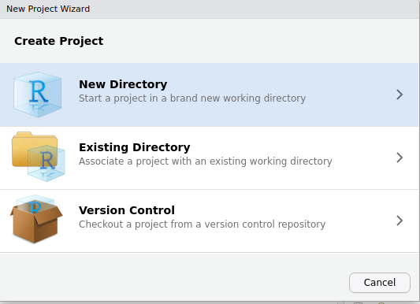
- New Project
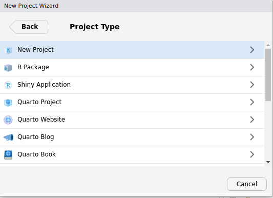
- Directory name: > Create Project
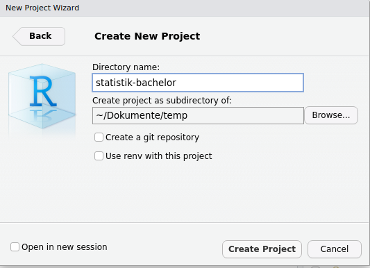
Dabei wirst du zunächst gewarnt, dass noch ein Job im Hintergrund ausgeführt wird, nämlich dieses Tutorial. Klick auf “Terminate”, das Tutorial wird dadurch beendet. Ruf das Tutorial wieder auf, wenn du das Projekt erstellt hast.
(Die Aufgabe gilt nicht für diejenigen, die RStudio in der Cloud nutzen: diese Personen mussten bereits ein Projekt erstellen um überhaupt RStudios Benutzeroberfläche zu sehen.)
Wenn du erfolgreich warst steht nun ganz oben rechts Dein Projektname:
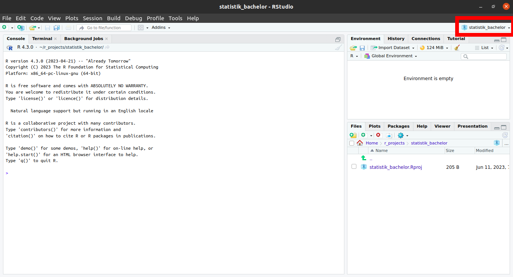
Glückwunsch, du hast nun ein Projekt eingerichtet. (Sicherheitscheck:
steht oben rechts statistik-bachelor?)
Fast immer am Anfang: Skripte
Jetzt brauchen wir nur noch ein Skript.
Das öffnest Du: oben, ganz links (New File) > R Skript
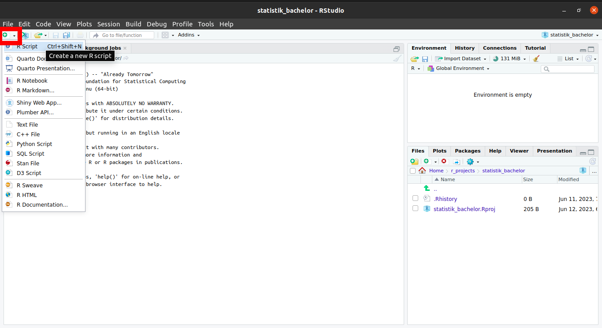
Skripte sind wie einzelne Blätter/ Unterlagen in einer Sammelmappe (= “Projekt”).
So, jetzt ist alles da, was wir für die nächsten Schritte brauchen.
Und nun schauen wir erstmal, was da im Einzelnen zu sehen ist. (Wir beschränken uns dabei auf die Aspekte, die Du in nächster Zeit brauchen wirst.)
Konsole
Unten links findest Du die Konsole:
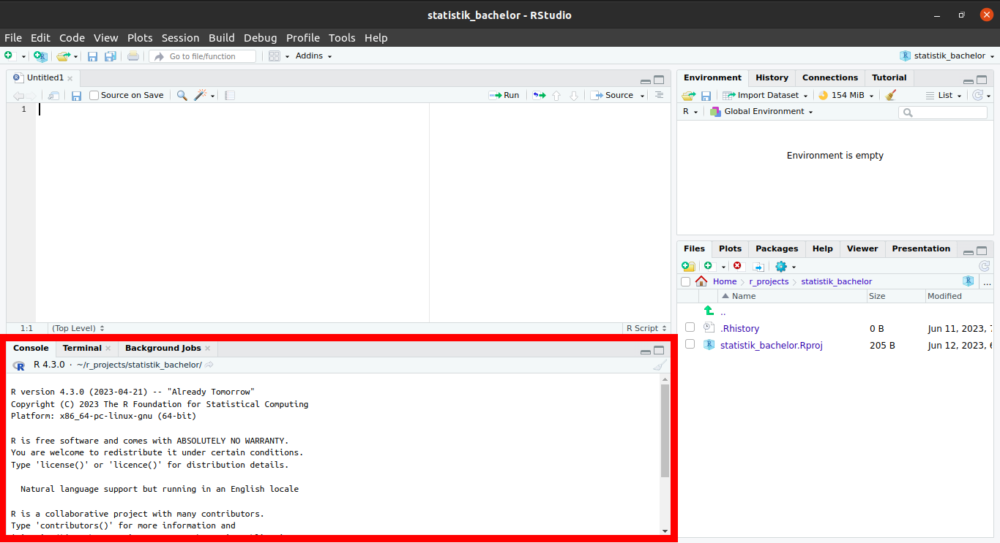
Dieses Fenster entspricht der Konsole / Terminal beim Rechner (so.). Dies ist der “Taschenrechner”, hier findet das Rechnen statt.
Aufgabe:
Gib in deiner Konsole verschiedene Rechnungen ein (Addition, Subtraktion
etc.) und drücke auf Enter. Mache dich auf diese Art mit
der Funktionsweise und Optik der Konsole vertraut.
Rechenbeispiele: Gib Aufgaben dieser Art in der Konsole ein!
1 + 4
2 + 5 - 4
10 / 2 + 2
10 * 10
10^2
5 + 10 * 2
2.5 + 2.5Syntax-basics:
- Das Dezimaltrennzeichen ist ein Punkt
.und kein Komma! - Operatoren wie
+,-,*usw. werden auf beiden Seiten mit Leerzeichen umgeben. Es funktioniert zwar auch ohne, aber die Lesbarkeit ist besser mit Leerzeichen links und rechts.
Skripteditor
Oben links findest du ein multifunktionales Fenster, was sich nur öffnet wenn ein Skript geladen ist oder eine Tabelle angezeigt wird.
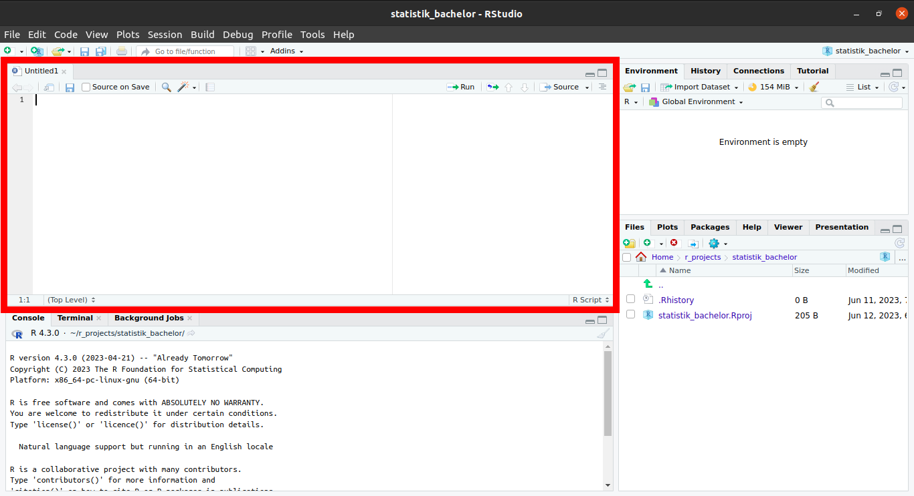
Mit Code in einem Skript passiert erst mal gar nichts. Erst wenn Du
auf Strg + Enter drückst wird die betreffende Zeile für
dich in die Konsole kopiert, hier ausgeführt und das Ergebnis
angezeigt.
Diese Aufteilung ist total sinnvoll, da sie es ermöglicht, in der Textdatei oben die Übersicht zu behalten. Du kannst hier auch Kommentare einfügen. So kannst Du später noch nachvollziehen, was Du wann in welchem Schritt gemacht hast. Zeitgleich können unten in der Konsole die Berechnungen stattfinden. Im Gegensatz zur reinen Konsole lässt sich die Textdatei speichern und es bleibt nachvollziehbar und für weitere Arbeitsschritte nutzbar.
Aufgabe:
Gib nun auch wieder kleine Rechenaufgaben, wie in der Konsole oben, in
dem Skript ein. Drücke Strg + Enter, um das
jeweilige Statement auszuführen. Schau dann unten in die Konsole. Mach
dich mit den Gleichheiten und Unterschieden vertraut, die Skript und
Konsole haben.
Da du das Skript speicherst, es also später wieder öfnnen und weiternutzen und sogar mit anderen teilen / co-worken kannst, empfiehlt es sich sehr (!!!), auf einen guten Stil (s.u.) zu achten und deine Arbeitsschritte zu kommentieren.
Guter Stil
Es gilt als guter Stil:
- Operatoren wie
+,-,=auf beiden Seiten mit Leerzeichen zu umgeben odereswirdanstrengendzulesen.- z.B.
5 + 5
- z.B.
- Kommata haben gerne, (wie in der gewohnten Schriftsprache) ein Leerzeichen hinter sich
- Kommentare: Für die inhaltliche Verständlichkeit ist es hilfreich,
den geschriebenen Code zu kommentieren. Dies geschieht mit einem
#- z.B.:
5 + 5 # Addition
- oder:
# Addition5 + 5
- z.B.:
Aufgaben:
- Gib deinem Dokument einen Titel (
#### Titel ####) - Kommentiere deine Rechenoperationen (
#) - Speichere Dein Skript (
Strg+s) und nenne es:01_einfuehrung
Report kompilieren
Und ein Letztes zu den Skripten und warum sie wunderbar sind: Sie
lassen sich inklusive Ergebnisse in Reports bringen: Hier
sind die einzelnen Befehle, Kommentare UND Ergebnisse (auch Grafiken)
zusammengefasst. Das macht es schön und übersichtlich. Meine Empfehlung
ist, wenn ein Skript fertig ist, immer auch einen Report zu kreieren. Da
schaust du später lieber rein. Trust me in that.
ganz oben, ganz links > File > Compile Report… (> File Name: )> Report output format MS Word
Aufgabe:
Kompiliere dein Skript.
Skript, Konsole und diese Tutorials
Dieses Zusammenspiel von Textdatei und Konsole imitieren wir
innerhalb der Tutorials durch die oben bereits erwähnten
Code-Blöcke:
Du schreibst etwas in den Block, drückst Strg +
Enter und weiter unten spuckt R dir ein Ergebnis aus.
Probier es doch gleich mal aus:
Nutze den Tipp-Knopf für Informationen und achte dabei
auch auf guten Stil.
Aufgabe:
Schreibe / berechne und kommentiere jew. eine:
- Addition
- Subtraktion
- Multiplikation
- Division
- Potentierung
- Quadratwurzel
Tipp
Die Programmiersprache R kann wie ein Taschenrechner benutzt werden.
*Multiplikation/Division+Addition-Subtraktion^Potentionsqrt()Quadratwurzel
(… und es gibt noch mehr)
Kommentare
machst Du mit einem #. Dann weiß R, das alles
dahinterstehende Menschensprache ist
Syntax
Als Dezimaltrennzeichen akzeptiert R nur den Punkt .
Environment
Oben rechts findest Du Deine Umwelt
bzw. Environment und darin werden erstellte
Objekte angezeigt.
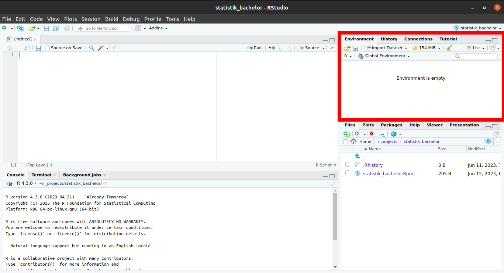
Unter dem Reiter Environment siehst du deine zwischengespeicherten Objekte. Darauf wird in den folgenden Tutorials genauer eingegangen.
Den Zusammenhang des bereits vorgestellten kannst Du dir in etwa so vorstellen:
Oben links (
Skripte) bestimmst Du eine Choreografie. Die steht erstmal nur so auf einem Blatt Papier. Um sie auszuführen brauchst Du:Tänzer*innen: Leute, die das, was Du dir so ausdenkst auch wirklich ausführen. Das sind die
Daten(“Objekte”) oben rechts. Diese wiederum brauchen zum tanzen einenTanzboden. Diesen Part übernimmt die
Konsoleunten links
Der zweite spannende Reiter in diesem Fenster ist Tutorial. Hier findest Du unsere und andere Tutorials - auch dieses hier.
Viewer / Dateibrowser
Fehlt nur noch das Fenster unten rechts. Ich präsentiere feierlich: Alles was wichtig ist!
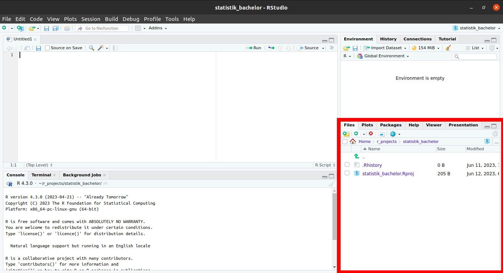
Hier sind ziemlich wichtige und hilfreiche Funktionen zusammengefasst, die bisher noch kein anderes zu Hause gefunden haben:
- Im Reiter
Fileskannst Du nach verschiedenen Dateien suchen und öffnen. Das werden vor allem andereSkriptesein. Diese öffnen sich dann im Fenster oben links - Im Reiter
Plotswerden dir die Grafiken (“Plots”) angezeigt (späteres Tutorial). Du kannst zwischen den in dieser Sitzung generierten Plots über die Pfeiltasten navigieren - Im Reiter
Packageswerden dir Deine installierten Pakete (s.u.) angezeigt. Hier gibt es auch die Möglichkeit, neue zu installieren oder vorhandene zu updaten. - Unter
Helpfindest Du Erklärungen und Hilfestellungen zu eigentlich jeder Funktion, die Du in R benutzt. Wenn Du zu einer bestimmten Funktion eine Hilfestellung benötigst tippe einfach?funktionin die Konsole und drückeEnter, schon wird dir die entsprechende Hilfeseite im Viewer angezeigt - Im
Viewerwerden bei manchen Funktionen schöne Tabellen und Übersichten ausgegeben.
Aufgabe:
Gib in deiner Konsole ?mean ein und mache dich mit der
Hilfeseite zu dieser Funktion vertraut.
Abschlussquiz
Learnings
- Ich habe R Studio geöffnet
- Ich weiß, was und wo die Konsole in R Studio ist
- Ich weiß was und wo ein Skript in R Studio ist und wie ich eines erstelle
- Ich weiß, was ein Projekt in R Studio ist und wie ich eines erstelle
- Ich weiß, mit welcher Funktion ich die Dokumentation einzelner Funktionen aufrufen kann, um Informationen über diese zu bekommen
- Ich weiß, was ein guter Stil in R ist
- Ich habe das Projekt
statistik-bachelorerstellt - In diesem Projekt liegt ein Skript
namens
01_einfuehrung.R - Ebenfalls in diesem Projekt liegt
ein kompiliertes Skript namens
01_einfuehrung.docx